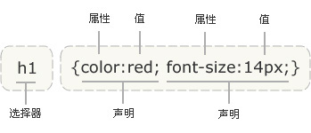
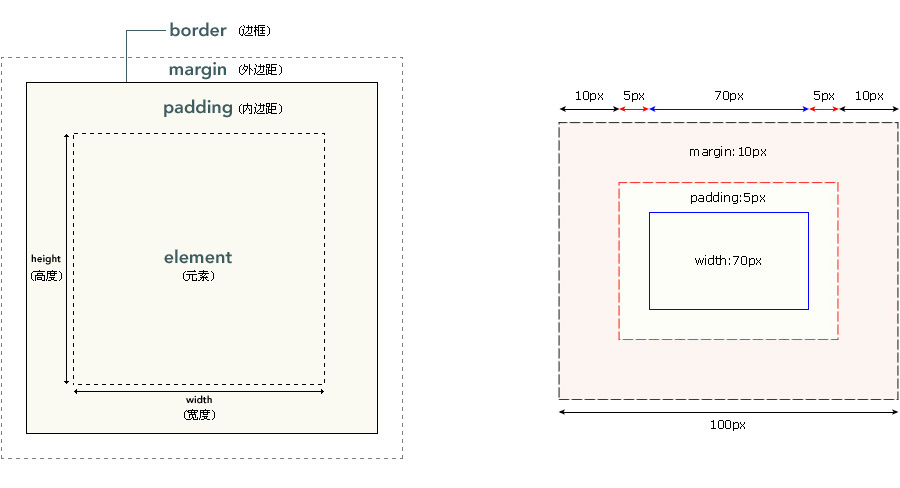

1、CSS规则由两个主要的部分构成：选择器，以及一条或多条声明；
2、每条声明由一个属性和一个值组成，属性和值被冒号分开；
3、下面的示意图为您展示了上面这段代码的结构：

1、CSS盒子模型规定了元素框处理元素内容、内边距、边框和外边距的方式；
2、盒子模型由内至外依次顺序为：content、padding、border、margin；
3、盒子模型显示效果从第一层到第五层依次为：border、content+padding、background-image、background-color、margin；

| css优先级：style（1000），id（100），class（10），div/p...（1） | |
|---|---|
| 选择器 | 优先算法优先级 |
| style=" " | 10001000 |
| #wapper #container{ } | 100+100200 |
| #container .content{ } | 100+10110 |
| div#container{ } | 1+100101 |
| #container{ } | 100100 |
| .content p.comment{ } | 10+1+1021 |
| .content .comment{ } | 10+1020 |
| p.comment{ } | 1+1011 |
| .comment{ } | 1010 |
| div p{ } | 1+12 |
| p{ } | 11 |
| css文本 | |
|---|---|
| 属 性 | 描 述值 |
| line-height | 设置行间的距离（行高） |
| text-align | 水平对齐方式 |
| text-indent | 首行文本的缩进 |
| letter-spacing | 字母、字符间距 |
| word-spacing | 单词、词组间距 |
| white-space | 换行nowrap/normal |
| text-decoration | 添加下划线overline/line-through/underline/none |
| text-transform | 大小写uppercase全部大写/capitalize开头字母大写/lowercase全部小写 |
| text-shadow | 文本阴影5px 5px 5px #FF0000/水平 垂直 距离 颜色 |
| css文字 | |
|---|---|
| 属 性 | 描 述值 |
| font | 字体系列font:italic bold 12px/20px arial,sans-serif |
| font-family | 字体系列 |
| font-size | 字体大小 |
| font-weight | 字体粗细 |
| css链接 | |
|---|---|
| 属 性 | 描 述 |
| a:link | 未被访问的链接 |
| a:visited | 用户已访问的链接 |
| a:hover | 鼠标指针位于链接的上方 |
| a:active | 链接被点击的时刻 |
| css列表 | |
|---|---|
| 属 性 | 描 述值 |
| list-style | 列表属性list-style:square inside url(../images/icon.gif) |
| list-style-type | 列表样式disc实心圆/circle空心圆/square实心方块/decimal数字 |
| list-style-position | 标志位置inside文本内/outside默认值，文本外，文本左侧 |
| list-style-image | 使用图像作为标志url(../images/icon.gif) |
| css缩写 | |
|---|---|
| 属 性 | 声 明顺 序 |
| font | font: 14px/1.4286 "Microsoft YaHei";加粗 字体大小/行高 字体 |
| border | border:1px solid #000;宽度 边框线种类 颜色 |
| background | background:url(bg.png) #00f no-repeat 0 0;背景图片 颜色 重复类型 定位 |
| display | |
|---|---|
| 属 性 | 描 述值 |
| inherit | 规定应该从父元素继承 display 属性的值 |
| none | 此元素不会被显示 |
| block | 此元素将显示为块级元素，此元素前后会带有换行符 |
| inline | 默认。此元素会被显示为内联元素，元素前后没有换行符 |
| inline-block | 行内块元素 |
| list-item | 此元素会作为列表显示 |
| run-in | 此元素会根据上下文作为块级元素或内联元素显示 |
| table | 此元素会作为块级表格来显示（类似 table），表格前后带有换行符 |
| inline-table | 此元素会作为内联表格来显示（类似 table），表格前后没有换行符 |
| table-cell | 此元素会作为一个表格单元格显示（类似 td 和 th） |
| table-row | 此元素会作为一个表格行显示（类似 tr） |
| table-row-group | 此元素会作为一个或多个行的分组来显示（类似 tbody） |
| table-header-group | 此元素会作为一个或多个行的分组来显示（类似 thead） |
| table-footer-group | 此元素会作为一个或多个行的分组来显示（类似 tfoot） |
| table-column-group | 此元素会作为一个或多个列的分组来显示（类似 colgroup） |
| table-column | 此元素会作为一个单元格列显示（类似 col） |
| table-caption | 此元素会作为一个表格标题显示（类似 caption） |
| float | |
|---|---|
| 属 性 | 描 述值 |
| float初衷 | 实现文字环绕效果，具有包裹性和破坏性 |
| 左侧固定 |
.boxLeft{float:left; width:60px;} .boxRight{margin-left:70px;} |
| 右侧固定 |
.boxLeft{float:left; width:100%;} .boxLeft-cont{margin-right:70px;} .boxRight{float:left; width:60px; margin-left:-60px;} |
| 左右固定/中间自适应 | .left,.right,.content{ height: 300px; line-height: 300px; text-align: center;color: #fff; } .left { float: left; width: 200px; background-color: blue; } .right { float: right; width: 300px; background-color: green; } .content { margin: 0 300px 0 200px; background-color: black; } |
| 左右自适应 |
.boxLeft{float:left;} .boxRight{display:table-cell; width:9999px; *display:inline-block; *width:auto;} |
| absolute | |
|---|---|
| 属 性 | 描 述值 |
| absolute | 与float一样，是同父异母的兄弟关系，具有包裹性和破坏性，脱离文档流 |
| 图片遮罩透明度实现100%宽高 | .cover{position: absolute;left: 0; top: 0; right: 0; bottom: 0;} |
| 无宽度高度实现全屏自适应 |
html,body{ height: 100%; } .popBox{position: absolute;left: 0; top: 0; right: 0; bottom: 0;} |
| left、right、width、margin拉伸居中 | .image{position: absolute; left: 0; right: 0; width: 50%;margin: auto;} |
| 宽高自适应九宫格效果 |
html,body{ height: 100%; margin: 0; } .box{position: absolute;left: 0; top: 0; right: 0; bottom: 0;} .list{position: relative;float: left; width: 33.3%;height: 33.3%;} .list:before {content: '';position: absolute;left: 10px; right: 10px; top: 10px; bottom: 10px;} .list:after{content:attr(data-index);position: absolute;left: 0; right: 0; top: 0; bottom: 0;height: 30px;margin: auto;} |
| 头尾固定整体布局 |
html,body,.page{height: 100%; width: 100%;overflow: hidden;} .page{position: absolute; left: 0; top: 0;} .header, .footer, .content { position: absolute; left: 0; right: 0; } .header { height: 48px; top: 0; z-index: 1; } .footer { height: 52px; bottom: 0; z-index: 1; } .content { top: 48px; bottom: 52px; overflow: auto; } |
| overflow | |
|---|---|
| 属 性 | 描 述值 |
| overflow | visible/hidden/scroll/auto/inherit |
| overflow-x/overflow-y | 设置其中一个值为hidden，则另外一个值默认为scroll |
| overflow和absolute公用 |
特点：隐藏失效和滚动固定 解决方案：给当前或子元素设置包含块（relative等）或在子元素声明transform |
| 依赖overflow的样式表现 |
元素拉伸：overflow:hidden; resize: both; 超出省略：overflow:hidden; text-overflow:ellipsis; white-space: nowrap; |
| overflow与锚点技术 | 滚传单、选项卡的使用 |
| vertical-align | |
|---|---|
| 属 性 | 描 述值 |
| vertical-align起作用的前提 | inline/inline-block/table-cell元素下才生效，默认情况下：图片、form表单元素、文字、单元格... |
| vertical-align |
baseline/top/middle/bottom text-top/text-bottom：跟父级的font-size有关 |
| vertical-align和line-height关系 | 一起存在众多内联元素当中 |
| margin | |
|---|---|
| 属 性 | 描 述值 |
| 干掉margin-top/margin-bottom重叠 |
1、父元素设置padding-top/padding-bottom的值 2、父元素设置border-top/border-bottom的值 3、父元素设置overflow:hidden值 4、中间添加元素，如nbsp; |
| 辅助属性（仅限谷歌或移动端） |
-webkit-margin-start:100px;-webkit-margin-end:100px;/*水平边距*/ -webkit-margin-before:100px;-webkit-margin-after:100px;/*垂直边距*/ -webkit-writing-mode:vertical-lr;/*水平改为垂直*/ -webkit-margin-collapse:collapse默认-重叠/discord取消边距/separate分隔 |
| padding | |
|---|---|
| 属 性 | 描 述值 |
| padding影响 |
1、block元素：设置border-box，会影响宽度 2、inline元素：影响左右，不影响上下 |
| padding百分比 |
设置50%，宽度的50%，block元素和inline元素（加font-size:0），形成正方形 |
| padding自带或设置 |
所有浏览器input/textarea输入框内置padding值 所有浏览器button按钮内置padding值，button可用label虚拟代替 部分浏览器select下拉内置padding值，如火狐/ie8可以设置padding 所有浏览器radio/checkbox单复选框无设置padding值 |